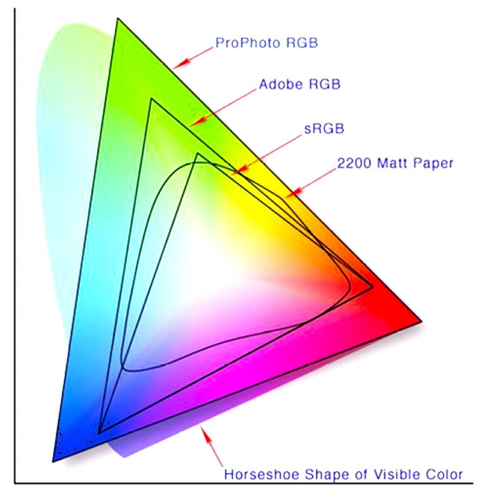

라이트룸에서 사용되는 색공간에는 sRGB, Adobe RGB, Prophoto RGB가 있다. sRGB는 표준 RGB 색공간이고, Adobe RGB는 어도비사에서 개발한 RGB 색공간이다. 최근에는 코닥사에서 개발한 ProPhoto RGb 색공간도 많이 사용하는데, 이는 Adobe 보다 더 많은 색을 포함한다.
일반적으로 모니터 화면용이나 인화용 사진은 sRGB로 설정하고, 인쇄용 사진은 Adobe RGB를 사용한다. 각각의 색공간 영역을 그림으로 표시하면 다음과 같다.
🌸 ProPhoto RGB: 가장 넓은 색 범위를 지원해 풍부한 색 재현이 가능하며,
RAW 파일 보정 시 주로 사용됩니다.
🌸 Adobe RGB / sRGB: 내보내기 시 선택하며, Adobe RGB는 인쇄·그래픽 작업에,
sRGB는 웹·디스플레이용으로 적합합니다.
🌸비트 심도: 내보내기 시 16비트 ProPhoto RGB가 권장되며,
8비트 sRGB는 색 표현이 제한됩니다.

[Color Space]
[참고문헌]
[1]프로페셔널 사진의 조건/라이트룸5, 백종수, 이지스퍼블리싱, 2013.11.14.
....
....
....
....
....
....